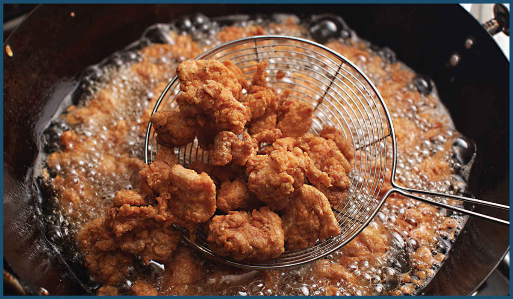

Panfrying works well in a wok but can also be done just fine in a skillet. Where woks truly excel is in the realm of deep frying. For stovetop use, there’s no vessel that beats it. What makes a wok so good for deep frying? Glad you asked. We’ll talk about that, as well as every other question you may have about deep frying before we get to the recipes.
All of Your Deep-Frying Questions Answered
Q Why is a wok the ideal vessel for deep frying?

A It’s all in the shape. The flared sides of a wok offer several advantages over the vertical sides of a Dutch oven or saucepan.
It’s safer. Adding food to hot oil creates bubbles of water vapor that can begin to pile up on top of each other. In a tall, narrow pot, there’s only one way for them to go: up and over. A wok, with its flared sides, on the other hand, provides plenty of extra space for those bubbles to spread out. Their surface area increases, weakening their structure and causing them to pop.
It’s less messy. Deep frying food inevitably causes oil spatter. In a straight-sided pot, those oil droplets end up on your range (or floor). The flared sides of a wok catch a much larger proportion of these droplets, keeping your cooktop neat and clean.
It offers more space for maneuvering. The sloping sides of a wok make it easy to grab food with a spider or a pair of long chopsticks. It also prevents pieces of food from piling up on top of each other. Both of these factors lead to more efficient, even frying.
THE TOOLS
Q Do I need any special tools to deep-fry?
A At a bare minimum you’ll need these three tools (and a willingness to leave your fears at the kitchen door).
A wok. This is the ideal frying vessel for a home kitchen.
A thermometer. Maintaining the right temperature is essential for effective deep frying. I recommend either a leave-in deep-fry thermometer with a pot clip or a good instant-read thermometer like the Thermapen from Thermoworks or the more budget-friendly Thermopop.
A wire-mesh spider, for maneuvering foods as they fry, lifting foods out of the fryer as they finish, and fishing out bits of debris from the oil to keep it relatively clean during frying.
Additionally, you’ll probably also want:
A wire resting rack. This can be a semicircular rack that rests on the lip of your wok and allows oil to drip from fried foods back into the wok below, or it can be a wire rack that fits into a rimmed baking sheet that you keep next to your wok.
A fine-mesh strainer to filter used oil through before storing and reusing.
A sealable container to store your deep-frying oil between uses (and to discard used oil). An old empty oil container with a screw-top lid works well for this.
A funnel to facilitate transferring used oil to the container.
A fire extinguisher for worst case scenarios. Make sure it’s one designated for oil fires (a water-based extinguisher will only make oil fires worse).
HOW FRYING WORKS
Q What exactly happens when you deep-fry foods, and why are deep-fried foods so delicious?
A Deep frying breaks down to a few key processes:
Dehydration: Virtually all foods that we fry contain some amount of moisture. While water boils at 212°F (100°C), fat for deep frying is typically heated much hotter, between 300°F (150°C) and 400°F (205°C). As soon as food is lowered into the fat, energy from the hot oil is used to convert moisture from the food into steam. This is what causes the rapid bubbling that you see during frying* and an important first step in deep frying. The most obvious benefit of dehydration is that it allows batters and breadings to become crisp. However, it’s also important to note that until a significant amount of surface moisture has evaporated, it’s very difficult for the temperature of your food to surpass the boiling point of water. This makes dehydration a vital first step for . . .
Browning and Caramelization: The former, which food scientists call “Maillard browning” (pronounced “may-yard”), is the process by which proteins and carbohydrates break down into their constituent parts, then recombine to form a cascading series of new compounds that give browned foods their complex, toasty, roasty aroma. The latter is a similar process that occurs to sugars when heated. Both of these processes occur only after enough moisture has evaporated to allow the food being fried to reach temperatures that exceed the boiling point of water.
Expansion: Wet, dense batters become puffy, light, and crisp because of the expansion of gases trapped within them (in the case of batters that rely on baking powder or yeast to produce carbon dioxide gas, batters made with soda water, or batters in which egg whites are whipped up to incorporate air, for instance), as well as the rapid transformation of water to water vapor. In some batters, alcohol, which has a relatively low boiling point and thus converts to vapor more violently and rapidly, can be used to increase this effect. (Several of the recipes in this section include batters made with vodka for this reason.)
Protein coagulation: When heated, the structure of raw proteins will tighten. This, in conjunction with dehydration, is what makes loose batters and breadings form rigid, crisp structures.
Oil absorption: When water leaves foods in the form of steam, this leaves empty gaps where oil is subsequently absorbed. Generally, the higher the temperature of your oil, the more water is forced out and the more oil your food will absorb. Bear in mind that excess oil absorption is not what makes foods taste greasy. More on that in a moment.
Q OK . . . that’s a lot happening at once. How do I make sure that it all gets done at the same time?
A So long as you’re following a well-tested recipe (or have enough experience and knowledge under your belt to improvise) and you’re carefully monitoring oil temperature, it doesn’t require much work at all. The beauty of deep frying is that all of those things happen at once with very little work on the part of the cook. A good—and more importantly, safe—fry cook’s job boils down to a few things:
Keep the wok handle facing the back of the stovetop, and if possible, place the wok on a back burner to minimize the chance that it will get bumped or pushed off the stovetop. Make sure that you have space to work—now is not the time for friends or toddlers to crowd the kitchen.
Properly maintain oil temperature. Letting the oil get too hot or too cold will lead to food that’s greasy and undercrisped or burnt and acrid tasting (and raw in the middle). Keep an eye on your oil temperature using an instant-read thermometer or a leave-in deep-frying thermometer at all times during the process.
Keep it separated. You’ve got a handful of vegetables in a bowl of tempura batter. If you drop them into the oil all at once, they’ll form a single large battered vegetable raft. What’s worse is that the vegetables and batter trapped in the middle of the raft won’t cook properly, leading to pockets of raw batter. Instead, always remember to lower foods into the oil one piece at a time to ensure that they stay separated and cook evenly. Lowering larger pieces of food in slowly will also allow coatings to expand, which will buoy up the food and ensure that they don’t sink and stick to the bottom of the wok.
Don’t fear the fat. Hot fat can sense fear, and this is a lesson you’ll learn the first time you hold your hand high above the oil, causing it to splash onto your arm or feet as you drop food into it. Instead, bring your hand right down above the surface of the oil and lower the food into it to minimize splashing.
Keep things moving. Have you ever noticed that a cold day feels much colder when there’s a breeze? This is because on still days the air around your body will warm up. A breeze will continuously expose you to fresh cold air. A similar thing happens during deep frying: as a piece of food cooks in a wok, the oil directly surrounding it will lose energy and be at a relatively low temperature, rendering frying inefficient. Continuously agitating the oil and keeping food moving with a spider, tongs, or chopsticks will ensure that it is constantly hit with fresh, hot oil so that it fries efficiently and evenly.
Let delicate crusts set. The only time you should ignore the previous rule is right when your food is first added. Agitating too early can lead to crusts that break off the food. Make sure to let batter and breading begin to set before you start moving food around. This typically takes 10 to 15 seconds.
Keep your oil clean. As you deep-fry food, you’ll find that bits of batter, panko crumbs, or errant vegetable scraps will begin to collect. Those bits of stuff will cause your oil to break down faster or can burn and end up stuck to the exterior of the next batch of food you fry. When I’m frying, I keep a small heatproof container next to my wok. This container has two purposes: First, as I fry I can continuously fish out and discard unwanted detritus in the fry oil. Second, it’s a good place to rest my frying implements when they aren’t in my hands.
Don’t drink and fry.
ALL ABOUT OIL
Q What’s the best oil for deep frying?
A With deep frying, you typically want a fat that has a relatively neutral flavor (no extra virgin olive oil or roasted sesame oil!)† and a relatively high smoke point, though as long as you’re monitoring temperature carefully, virtually any oil will have a high enough smoke point for deep frying. Fats with a higher percentage of saturated fat (vs. mono- or polyunsaturated fat) will typically yield crisper end results, and the fat will be more stable, which means you can reuse it more times before it starts to break down. However, if a fat is too saturated, it can solidify and turn waxy or pasty in your mouth. This is not a good thing.‡
I find that for deep frying, peanut oil, rice bran oil, and vegetable shortening produce the best results. Soybean oil, corn oil, and vegetable oil (which is typically composed mostly of soybean oil these days) are also good choices and are generally less expensive.
Q Is it possible to overheat my oil? What’s the danger if I do?
A As fats heat up, they eventually start breaking down, forming dangerous compounds called free radicals and acrolein, a chemical that can give foods an acrid, burnt flavor. The longer a fat is held at a high temperature, the more concentrated these compounds become. The temperature at which this concentration occurs is correlated to an oil’s smoke point—the temperature at which those volatile compounds start vaporizing in sufficient quantities to produce a visible bluish smoke, although there are exceptions. Extra-virgin olive oil, for instance, has a relatively low smoke point at 375°F (190°C), but, due to its high antioxidant content, is generally more stable than other fats at high temperatures.
That said, if you notice that your oil is smoking, you’ve heated it beyond typical deep-frying temperatures and you should immediately remove it from the heat. Adding some fresh, cooler oil is the best way to rapidly cool it. Do not put it in the sink or add water or ice!
Beyond the smoke point is a temperature called the flash point—this is the temperature at which actual flames may start flickering and leaping across the surface of the oil spontaneously. Don’t let your oil get this hot.
Here’s a chart of common cooking fats, their smoke points, flash points, and saturated fat content.
FAT |
SMOKE POINT |
FLASH POINT |
SATURATED FAT CONTENT |
Safflower Oil |
510°F/265°C |
600°F/315°C |
9% |
Palm Oil |
490°F/260°C |
615°F/320°C |
50% |
Light/Refined Olive Oil |
465°F/240°C |
600°F/315°C |
13% |
Rice Bran Oil |
450°F/230°C |
615°F/320°C |
25% |
Soybean Oil |
450°F/230°C |
625°F/330°C |
15% |
Peanut Oil |
450°F/230°C |
635°F/335°C |
17–20% |
Clarified Butter |
450°F/230°C |
565°F/295°C |
62% |
Corn Oil |
450°F/230°C |
620°F/325°C |
13% |
Canola Oil |
450°F/230°C |
620°F/325°C |
7% |
Sunflower Oil |
440°F/225°C |
610°F/315°C |
11% |
Vegetable Oil |
400°–450°F / 205°–230°C |
590–610°F / 310°–320°C |
15% |
Vegetable Shortening |
390°F/195°C |
590°F/310°C |
31% |
Grapeseed Oil |
390°F/195°C |
610°F/315°C |
10% |
Lard |
390°F/195°C |
620°F/325°C |
40% |
Coconut Oil |
385°F/195°C |
565°F/295°C |
86% |
Extra Virgin Olive Oil |
375°F/190°C |
600°F/315°C |
13% |
Q I’ve heard that properly deep-fried food doesn’t absorb much oil at all. Is this true?
A I believed this for a long time. The argument I heard went something like this: If you fry food at a high enough temperature, the outward force of water evaporating will prevent oil from being absorbed into foods. This is an appealing explanation, but it’s unfortunately incorrect. A 1997 study in the Journal of Food Engineering on how various factors affect oil absorption in tortilla chips found that while it is true that relatively little oil absorption takes place during the frying process itself (around 20 percent of total oil absorbed), the moment that you remove it from the hot fat, it cools rapidly, causing pressure within open pore spaces in the chip to drop. The surface tension of the oil simultaneously experiences a rapid increase. These two factors cause oil on the surface of the chip to flow very rapidly into the interior—about 64 percent of a chip’s total oil absorption takes place during cooling, and the vast majority of that absorption takes place within the first 10 seconds after the chip is removed from its oil bath.
The amount of oil that is absorbed is related to the amount of space that is freed up by the evaporation of liquids from within the food. Typically, the longer you fry a food and the hotter it is fried, the more water is forced out, thus the more fat it absorbs as it cools. Fat absorption is also related to oil freshness: the fresher the oil, the more fat gets absorbed into the food (and consequently the less fat is left on its surface).
Q But wait a minute. I’ve had food that was fried at too low a temperature, and it tastes greasier than food fried at the right temperature. What gives?
A There are two reasons for this. The first is that when food is fried at too low a temperature, more water is left inside it. More water inside means less room for surface oil to get absorbed as it cools, which in turn leads to more oil left on the surface of the food, making the food look and feel greasier than its properly fried counterpart. The second reason is that improperly fried foods will still have a lot of moisture left in their batter or breading, preventing them from crisping properly. This sogginess combined with the surface grease is what we perceive as greasiness on our fingers and tongues.
Note that the total amount of oil added to fried foods doesn’t significantly change whether the food is fried properly or not, nor whether the oil is old or fresh. What changes is the distribution of that oil, as well as the moisture content of the coating, and our subjective sensation of greasiness.
Q I see. I’m a little concerned about my calorie intake though. Is there any way to actually reduce the amount of oil added to fried foods?
A On an industrial scale, products like low-fat potato chips are made on specialized equipment that centrifuges food as soon as it comes out of the frying medium, which, like a salad spinner, causes liquids on its surface to be drained away before they can be absorbed. At home, you can mimic this technique by lining a salad spinner with several layers of paper towels (the sides and the bottom—this is to prevent hot oil from melting the salad spinner). Retrieve food from the fryer using a spider, give it a few good up-and-down shakes to get excess oil off, then immediately transfer it to the salad spinner and give it a spin (the goal is to get it spinning within 5 to 10 seconds of removal from the oil).
If that seems too involved, simply draining on paper towels can decrease oil absorption by around 25 percent in most cases, although resting on paper towels can cause the part of the food that is in contact with the towel to soften and become soggy if it’s left for too long (by contrast, resting food on an open rack will not cause sogginess).
In my opinion, the easiest (and best) way to reduce calorie intake from fried foods is to just reduce your portion size and realize that the foods in this chapter are not everyday fare.
Q I’m interested in deep frying at home, but it seems like such a waste of oil. Can I reuse the oil for other purposes?
A You can filter oil and reuse it for deep frying (generally multiple times), stir-frying, or sautéing, although oil’s useful life span will depend on what you’ve been frying in it. In general, the more particulate matter there is on the fried food, the shorter the life span of the oil and the more thoroughly you’ll need to filter it before reusing.
In order of easiest on your oil to toughest, here’s what we’ve got:
Foods coated in a wet batter (such as tempura, here, or Korean Fried Chicken, here): These foods are very gentle on your oil, especially if you try to minimize dripping when transferring the battered food to the oil.
Foods fried naked (such as Fried Shishito Peppers, here, or Crispy Fried Pork Belly, here): These foods require no filtering or straining after you’re done frying. They tend to be a little bit harder on your oil than wet-battered foods, especially meats, such as Málà Salt and Pepper Chicken Wings (here) or Dry-Fried Beef (here), which will expel protein-rich juices that can increase the rate at which oil begins to break down.
Foods that are breaded with panko or bread crumbs (such as Katsu, here, or Korokke, here): Panko bread crumbs increase the surface area of food, which can make for some supremely crunchy results, but that increased surface area also means increased contact points with the oil, which in turn leads to more rapid breakdown. Additionally, no matter how carefully you apply your breading, bread crumbs are going to fall off and sink, making contact with the hot bottom surface of the wok, causing them to darken and burn, which in turn hastens the rate at which oil breaks down.
Foods that are coated in a floury dredge (such as General Tso’s, here, or Orange Peel Beef, here): Floury dredging mixtures will shed off a ton of fine particles into your oil. This means lots of surface contact with food, which in turn means faster oil breakdown. Moreover, fine particles like flour can’t be fished out with a fine-mesh strainer, which means they end up spending a longer time in the oil in a given frying session.
Q What do I do after frying if I want to keep my oil for reuse?
A First, use a spider to clear out any large bits of stuff from the oil. Next, let it cool. As any fry cook who has forgotten to shut off the fryer until just before nightly cleaning can tell you, straining and storing hot oil is not a fun project. Push your wok to the back of your stove, put a lid on it to prevent dust or other stuff from falling into it, and leave it alone. The ideal temperature is just cool enough that you can handle it without danger of burning yourself (cooler oil is more viscous, which makes it harder to strain effectively).
Once the oil has cooled, you can strain it. If you’ve been cooking battered foods or foods breaded in large panko crumbs, a simple pass through a fine-mesh strainer is sufficient. For foods that have been dredged in a floury coating, you should line that fine-mesh strainer with paper towels, a coffee strainer, or several layers of cheesecloth to give it a finer filter. Transfer the filtered oil to a container that just fits it and has a tight-fitting lid (mason jars of various sizes work well for this). Store the oil in a dark pantry or in the refrigerator until you need it next.
Q How do I know my oil is past its prime?
A If your oil produces bubbles that collect and float on its surface rather than immediately popping, that’s a good sign that your oil is no longer going to fry effectively. It may also start developing fishy off-aromas. Finally, foods cooked in oil that’s too old won’t crisp or brown properly.
Q How should I discard used oil?
A Small amounts of used oil can be poured down the drain with some soap and hot water. For anything more than ¼ cup or so, it should be transferred to a container using a funnel and discarded. Some folks are lucky enough to have municipal oil recycling. Others will have to discard the oil in the container in the regular garbage bin (check with your city to figure out where your oil should be going).
Q So why can’t I keep using the same oil indefinitely? What exactly is happening in there?
A Two things: oxidation and hydrolysis. Oxidation is the process of large fat molecules, composed of three fatty acid chains attached to a glycerol backbone, breaking down into smaller and smaller constituent parts: first into free fatty acids, peroxides, and dienes, then into carbonyls, aldehydes, and trienes, and finally into tertiary products like foul-smelling ketones and short-chain hydrocarbons.
Oxidation is something that occurs even when you aren’t frying with your oil. If you’ve ever opened up a bottle of canola oil that your roommate has stored above the stove or on the windowsill (you would never do that, right?) and noticed a sticky, tacky feel around the mouth of the jar and a sort of fishy aroma, you’re familiar with oxidized oil. Hydrolysis occurs when you combine oil, water, and heat (in other words, every time you fry something), and it can significantly speed up the process of oxidation.
Eventually, when oil has broken down enough, the properties that made it such a good cooking medium—its ability to effectively transfer heat and remove moisture, for instance—start to lessen. This is why old oil yields soggy fried food.
Q Got it. So oxidation is the enemy. How do I stop it? What tools do I have at my disposal?
A Oil is in a constant state of increasing oxidation, and there’s nothing you can do to stop it. That said, you can slow it down significantly by controlling its storage environment and use. There are a few factors that will increase the oxidation rate of oil.
Light increases oxidation. I keep oils that I use every day and leave on the counter in tinted glass or lightproof metal containers. Oils that I use infrequently I store away in a dark pantry between uses.
Heat increases oxidation. If you keep oil on your countertop for everyday use, keep it well to the side of your stove (not, for instance, on the hot backsplash or in a cupboard above your cooktop).
Moisture increases oxidation. Make sure that when you strain and store your oil for reuse there is no layer of watery liquids at the bottom. If there is, carefully pour the clear oil off the top, then discard the watery layer. Transfer the oil to a clean, dry container. Additionally, make sure to keep stored oil well sealed so that humidity can’t find its way in.
Air contact increases oxidation. Store oil in a container that fits it. A small amount of oil in a large container that has a big headspace of air will oxidize faster than the same oil in a container with just a bit of headspace.
DEEP FRYING AT RESTAURANTS VS. AT HOME
Q Why do foods deep-fried at restaurants frequently come out better than my attempts at home?
A There are a few answers to this question. First and foremost, it’s the equipment. A restaurant deep fryer holds a very large volume of oil, typically around 40 pounds (about 12 gallons). It’s the Imperial Star Destroyer to the Corellian Corvette you have at home. A larger volume of oil means that there is a relatively low drop in temperature when you add room-temperature or cold foods to it, which in turn means more efficient frying. A large volume of oil also gives a good fry cook the ability to really keep the food moving around, constantly exposing it to fresh hot oil, which increases both the rate and the evenness of cooking.
To effectively overcome this handicap, it’s important to fry in small enough batches that your oil doesn’t significantly drop in temperature, and, more importantly, it’s important to carefully monitor oil temperature throughout the process. Most recipes will call for preheating the oil to a temperature higher than your actual frying temperature, to compensate for the sudden drop in temperature the oil will experience when you add food to it.
Q Wait—if my oil at home is good for only a half dozen or so batches of fried foods, how the heck does a restaurant manage? Do they switch out their oil every half dozen orders?
A Again, restaurants have an advantage here. As far as ingredients go, a restaurant has access to specialty oils that are formulated to have extra-long useful life spans. A commercial deep fryer also has the advantage that its heating element or tubes are elevated from the floor of the oil compartment. At home, when a bit of panko falls off your food, it lands on the bottom of the wok, where the oil is the hottest, causing it to burn relatively rapidly. In a restaurant deep fryer that panko falls below the heating elements, which keeps it from burning.
TROUBLESHOOTING FRIED RECIPES
Q I’m trying to adapt a recipe I have and keep finding that my food comes out overbrowned/underbrowned/raw in the middle/too tough/ etc. What can I do to fix it?
A It depends on the type of coating you’re using and the size of the pieces of food you’re cooking. Any decent recipe should give you appropriate cooking temperatures, but what if you’re trying to create a new recipe or modify one that you’ve already found success with?
Here are a few simple rules that will help you troubleshoot or make adjustments to recipes as you modify them.
If your coating is browning before the food is fully cooked: Lower the fry temperature and increase cook time. This allows for the food inside to cook before the coating starts to burn. You can also consider modifying the recipe for your coating. Sugar and some spices, such as dried herbs or paprika, will increase the rate at which coatings brown. Reducing or eliminating them from the recipe should help. Wheat flour, which is high in protein, also browns faster than cornstarch, potato starch, or rice flour. Replacing part of your wheat flour with one of those should decrease the browning rate.
If your coating looks perfect but the food inside is overcooked: Raise the fryer temperature and decrease cook time. Less time in the fryer means less time to overcook, while a higher temperature means more browning in less time.
If you are converting a recipe for small pieces of food to work for larger pieces of food: Lower the temperature and increase cook time. Larger chunks of food take a longer time to cook through to the center, which means that you need to lower the oil temperature a bit to avoid burning the coating on the exterior. For instance, while thin chicken fingers work just fine with a 4- to 5-minute fry at 350°F, a bone-in chicken thigh might take closer to 10 to 12 minutes at 300°F.
Conversely, the smaller the food, the higher the fry temperature and the lower the fry time.
If the coating on your breaded or battered foods feels tough: Most likely the overdevelopment of gluten, derived from wheat flour, is to blame. Replace part of the wheat flour with cornstarch, potato starch, or rice flour and make sure to fry your food immediately after you’ve covered it in your coating of choice (the longer wheat flour sits around wet before frying, the more gluten it will develop).
*You may have heard the expression “boiling oil.” In fact, during frying, it’s not the oil that is boiling, it’s the water in the food. Under normal circumstances, oil cannot boil—its boiling temperature is well above its smoke point (the temperature at which it emits smoke) and flash point (the temperature at which it will spontaneously erupt into flames).
†There are exceptions, and sometimes you really want those flavors in your food. Roman-style fried artichokes are typically fried in extra virgin olive oil, for instance, and I’ve been to tempura shops in Tokyo that fry in nothing but sesame oil.
‡Unless you’re planning on eating the Merciless Pepper of Quetzalacatenango.